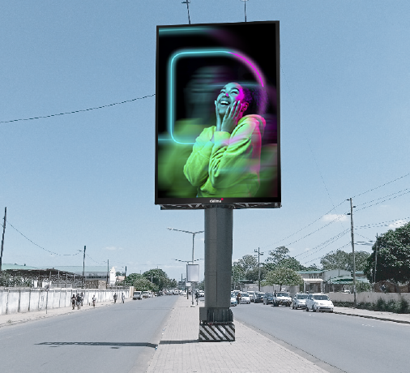

DALIMA | Publicidade Digital Outdoor
Av. 25 de Setembro, 2400 RC drt Maputo, Moçambique


Xiquelene B
Cruzamento da Av. FPLM com Rua da Soveste em direcç. à Praça dos Heróis

Xiquelene A
Cruzamento da Av. FPLM com Rua da Soveste em direcç. ao M. Xiquelene
Times Square
Av. Avenida Zedequias Manganhela, rua do pântano.



FPLM
Av. Das FPLM, perto do Hospital de Mavalane em direcç. à Praça dos Heróis